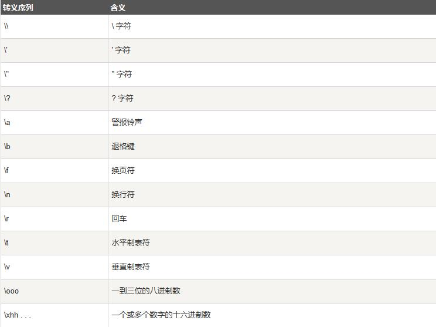
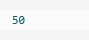

C++ 常量
常量是固定值，在程序执行期间不会改变。这些固定的值，又叫做字面量。
常量可以是任何的基本数据类型，可分为整型数字、浮点数字、字符、字符串和布尔值。
常量就像是常规的变量，只不过常量的值在定义后不能进行修改。
整数常量
整数常量可以是十进制、八进制或十六进制的常量。
前缀指定基数：0x 或 0X 表示十六进制，0 表示八进制，不带前缀则默认表示十进制。
整数常量也可以带一个后缀，后缀是 U 和 L 的组合，U 表示无符号整数（unsigned），L 表示长整数（long）。
后缀可以是大写，也可以是小写，U 和 L 的顺序任意。
下面列举几个整数常量的实例：
以下是各种类型的整数常量的实例：
浮点常量
浮点常量由整数部分、小数点、小数部分和指数部分组成。
您可以使用小数形式或者指数形式来表示浮点常量。
当使用小数形式表示时，必须包含整数部分、小数部分，或同时包含两者。
当使用指数形式表示时， 必须包含小数点、指数，或同时包含两者。
带符号的指数是用 e 或 E 引入的。
下面列举几个浮点常量的实例：
布尔常量
true 值代表真。
false 值代表假。
我们不应把 true 的值看成 1，把 false 的值看成 0。
字符常量
字符常量是括在单引号中。如果常量以 L（仅当大写时）开头，则表示它是一个宽字符常量（例如 L'x'），此时它必须存储在 wchar_t 类型的变量中。
否则，它就是一个窄字符常量（例如 'x'），此时它可以存储在 char 类型的简单变量中。
字符常量可以是一个普通的字符（例如 'x'）、一个转义序列（例如 '\t'），或一个通用的字符（例如 '\u02C0'）。
在 C++ 中，有一些特定的字符，当它们前面有反斜杠时，它们就具有特殊的含义，被用来表示如换行符（\n）或制表符（\t）等。
下表列出了一些这样的转义序列码：

下面的实例显示了一些转义序列字符：
当上面的代码被编译和执行时，它会产生下列结果：
字符串常量
字符串字面值或常量是括在双引号 "" 中的。
一个字符串包含类似于字符常量的字符：普通的字符、转义序列和通用的字符。
您可以使用 \ 做分隔符，把一个很长的字符串常量进行分行。
下面的实例显示了一些字符串常量：
定义常量
在 C++ 中，有两种简单的定义常量的方式：
使用 #define 预处理器。
使用 const 关键字。
#define 预处理器
下面是使用 #define 预处理器定义常量的形式：
具体请看下面的实例：
当上面的代码被编译和执行时，它会产生下列结果：

const 关键字
您可以使用 const 前缀声明指定类型的常量，如下所示：
具体请看下面的实例：
当上面的代码被编译和执行时，它会产生下列结果：
请注意，把常量定义为大写字母形式，是一个很好的编程实践。